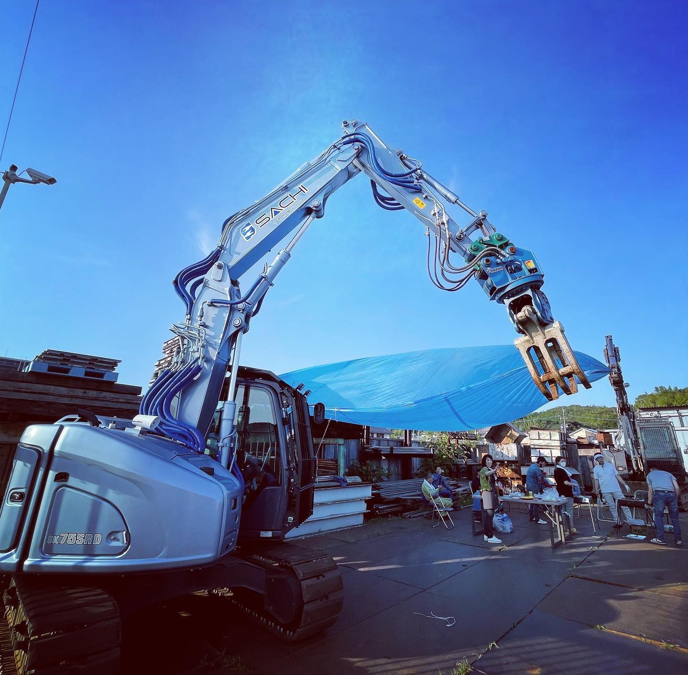

未経験からでもしっかり成長できる環境で、
解体の技術を身につけて長く働けます。
佐知産業は、福岡県北九州市八幡西区を拠点に、解体工事や産業廃棄物収集運搬を行っている会社です。
鉄骨・鉄筋コンクリート・木造住宅・プラント・工場など、さまざまな現場に対応。
さらに一般土木工事やアスベスト除去など、幅広い工事を手がけています。
平成14年には、産業廃棄物の減量化・再資源化への取り組みが評価され、北九州市より優良業者として表彰されています。
安定した仕事量と信頼のある環境で、安心して働ける会社です。
福岡県内の現場で、
建物の解体作業を行います。
最初は簡単な作業からスタートし、慣れてきたら重機操作なども覚えていきます。
体を動かしながら、しっかり技術が身につく仕事です。
経験がなくても大丈夫。
先輩スタッフが丁寧に教えるので、少しずつできることを増やしていけます。
重機操作や専門技術など、一生使えるスキルが身につきます。
将来的なキャリアアップにも確実につながります。

安全管理を徹底し、チームで声を掛け合いながら作業を進めています。
安心して働ける環境づくりを大切にしています。
| 募集職種 | 重機オペレーター・作業員・現場施工管理業務 |
|---|---|
| 業務内容 | 福岡県内の現場にて、解体工事に関わる作業を行っていただきます。重機を使用した解体作業、ガス切断、2トントラックの運転、現場での安全管理など、経験や能力に応じて業務をお任せします。 |
| 就業場所 | 福岡県内の各現場 |
| 給与 | 240,000円〜312,000円 ※能力・経験に応じて給与など変動あり |
| 勤務時間 | 8:20〜17:00 |
| 休憩時間 | 詳細はお問い合わせください |
| 休日 | 年末年始・夏季休暇・GW・その他休暇あり |
| 必要資格 | 詳細はお問い合わせください |
| 福利厚生 | 交通費支給・車通勤可・資格手当・ 役職手当あり |
| 雇用形態 | 正社員 ※試用期間3ヵ月あり |
| 求める人材 | 未経験から手に職をつけたい方、体を動かす仕事が好きな方、安全意識を持ってチームで働ける方、重機操作や専門技術を身につけたい方 |
株式会社 佐知産業
〒807-0831 福岡県北九州市八幡西区則松６丁目６−８